01COMMUNITY
创意实验
动作参考迁移
Reference Motion Transfer
让任意角色/动物完整复刻参考视频中的舞蹈动作——参考图锁形象，参考视频锁动作，节奏节拍级对齐。
查看
MINIMAX H3 SKILLS · 可视化发现入口
本站收录 19 个可安装的 MiniMax H3 Skills：9 个来自 MiniMax 官方仓库，10 个为社区原创。每个 Skill 的真实成片、输入要求、工作流和安装方式，都整理成一页能看懂的参考。
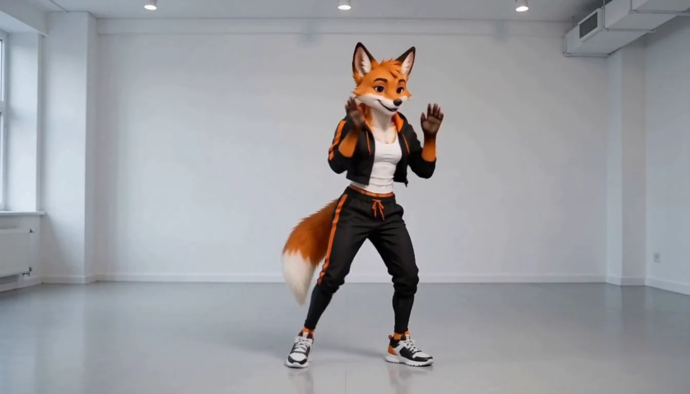
动作参考迁移文生宣传片图生关键帧短片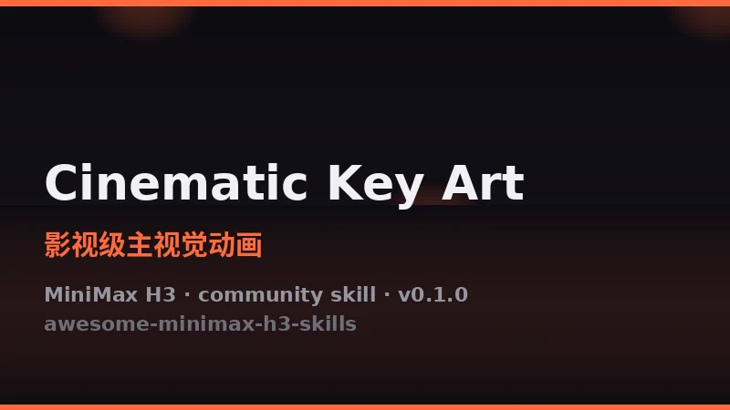
影视级主视觉动画建造延时摄影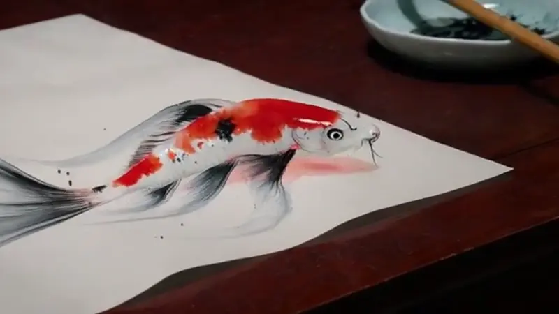
水墨活化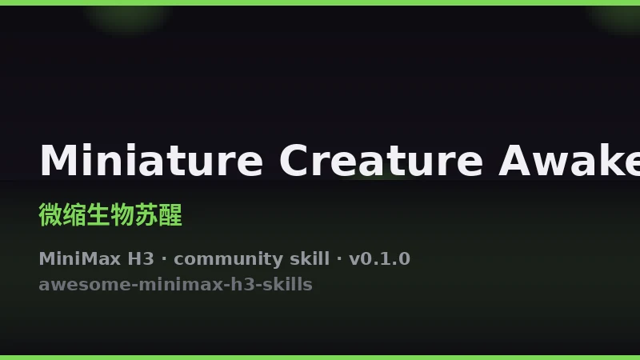
微缩生物苏醒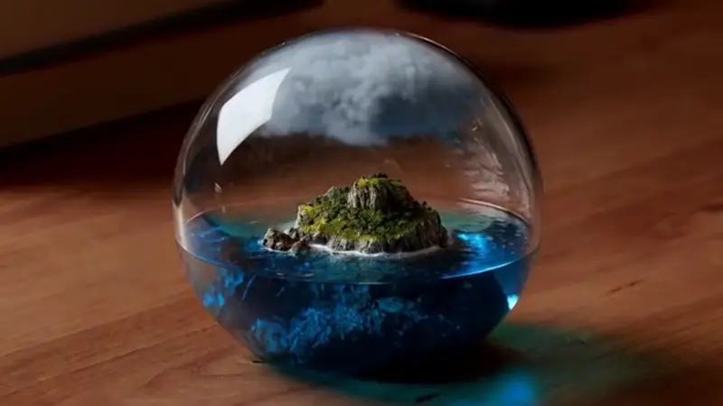
微缩世界景观自然微动治愈云海巨鲸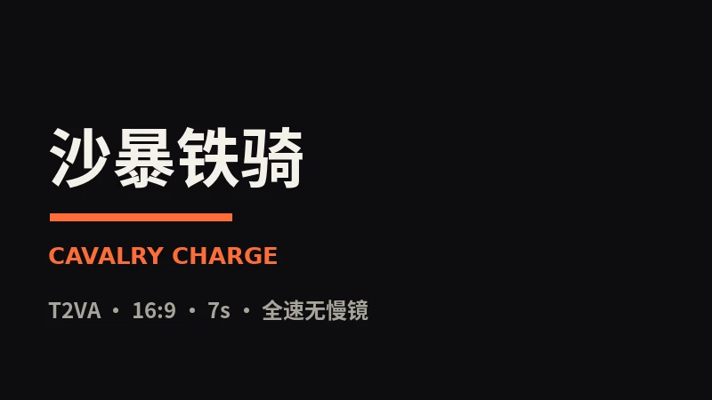
沙暴铁骑片头字效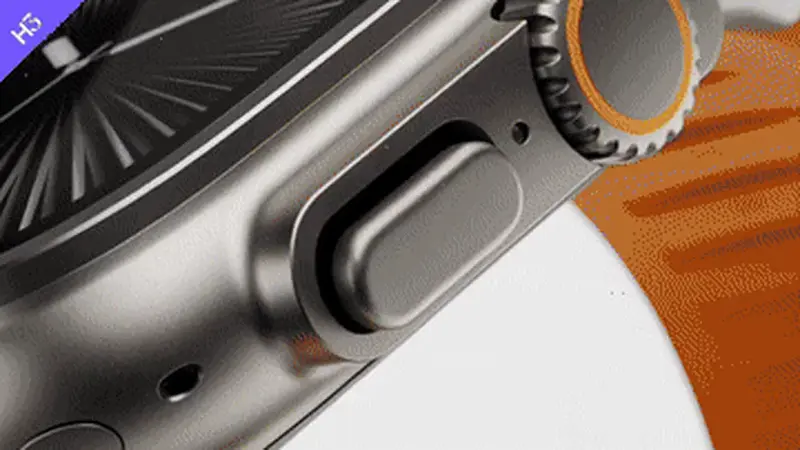
极简产品广告生成器3D 动画短片生成器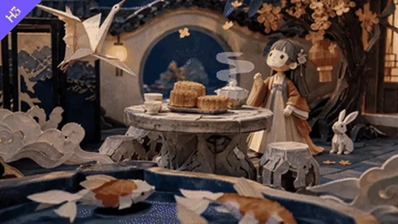
纸艺定格科普视频生成器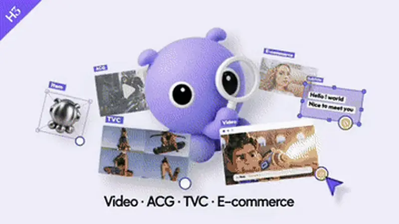
品牌宣传短片生成器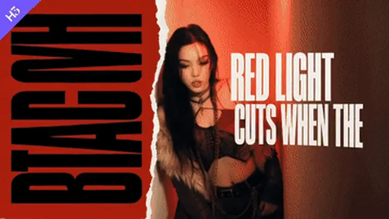
音乐 MV 动态字幕生成器双人游戏开场视频生成器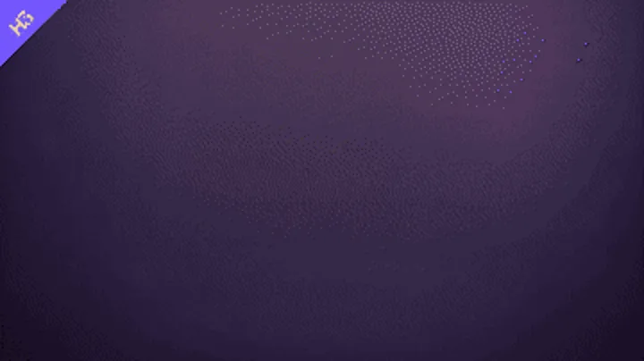
纸拼贴讲解动画生成器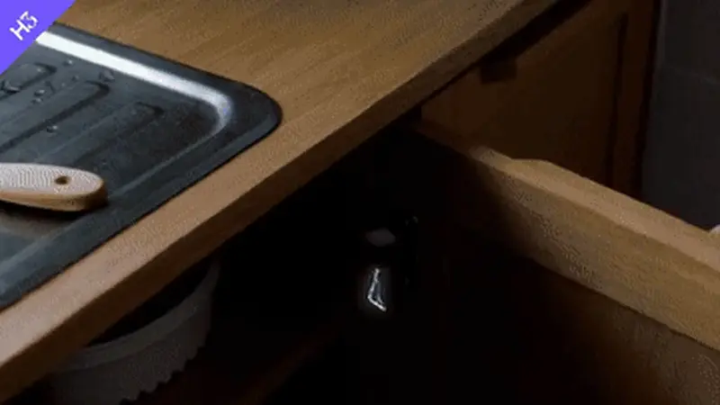
手绘实拍融合视频生成器动作参考迁移文生宣传片图生关键帧短片影视级主视觉动画建造延时摄影水墨活化微缩生物苏醒微缩世界景观自然微动治愈云海巨鲸沙暴铁骑片头字效极简产品广告生成器3D 动画短片生成器纸艺定格科普视频生成器品牌宣传短片生成器音乐 MV 动态字幕生成器双人游戏开场视频生成器纸拼贴讲解动画生成器手绘实拍融合视频生成器FOUNDATION · 基础 SKILL
H3 Prompt Writing
为全部五种 H3 生成模式撰写结构化视频生成提示词。
PROMPT STRUCTURE / 提示词结构
INDEX · 视频制作 SKILLS
Reference Motion Transfer
让任意角色/动物完整复刻参考视频中的舞蹈动作——参考图锁形象，参考视频锁动作，节奏节拍级对齐。
SUV Commercial — Future Luxury Vehicle Ad
从单张车辆参考图生成一段 15 秒 / 16:9 / 24fps 的顶级未来豪华 SUV 广告——优雅、克制、真实，无 BGM。
Link Skills with Base Loop — Character Showcase Sheet
从一张参考图生成杂志级角色设定展示图，近乎静止的 4 秒镜头。
Prove Product Through First-Person Test — UGC Food Review
从一张产品参考图生成真实第一人称 UGC 食品试吃测评（iPhone vlog 质感）。
Use Material as Progress Clock — Heritage Craft Documentary Ad
生成一支「材料自身外观就是影片时钟」的非遗工艺纪录广告。
Structure Product Proof Launch — Flagship Launch Ad (h3skills.com)
从一张风格参考图生成一支 h3skills.com 品牌旗舰 9 连硬切产品发布广告。
Redirect Mass with Leverage — Grounded Tavern Brawl
从一张双人参考图生成一段落地、超写实暗黑奇幻酒馆打斗。
Single-Goal Escape — Disasters Alternate Front and Back
一段式写实灾难动作片：货运飞船女机师穿越反应堆走廊火浪逃生，连续 15 秒 / 16:9 / 24fps。
2D Sticker × Real Night-Market Interaction
跨媒介喜剧短片：扁平 2D 贴纸角色与实拍场景同框互动——贴纸柴犬在夜市炒粉摊偷倒辣椒面，10 秒 16:9。
Retro Handheld — Everyday Farewell Glance-Back
超写实纪录片风格短片：一段被遗忘的 1998 年 MiniDV 家庭录像，记录海边小站年轻女生挥手告别，15 秒 16:9。
Documentary Follow — Encounter Then Depart on the Move
1970 年代纽约街头真实电影纪录片：肩扛 16mm 摄影机贴身跟拍一位素颜年轻女子穿过格林尼治村直至没入人流——15 秒 4:3。
Haute Couture Atelier Ad Style — Chinese Embroidery Luxury Ad
顶级西方高定广告风格：中国高级刺绣精品（朱砂红/黛蓝丝绸上的如意缠枝莲纹）局部微距特写，15 秒 16:9。
Pencil Transmutes Reality Into Sketch — Magic Pencil POV
POV 魔法铅笔短片：笔尖指向香港现实主体，将其彻底转化为动画 2D 手绘——港铁列车、唐楼街猫、红的士、公园长椅女性——10 秒 16:9。
Contrast Comedy — Calmer Yet More Out of Control
超写实荒诞喜剧：一只披着华丽斗篷的雄性鸵鸟在马戏团走秀，拍歪追光灯、撞落人台模特，最后甩落斗篷 mic-drop——10 秒 16:9。
Upgrade Satire — New Arrival, Old Love Moved Away
1950 年代三段式染印法电视广告：一家人欣赏老式思考机器 TRITON，更庞大的 TITAN 被推入，抱着旧机器不放的小男孩被拖过地板——15 秒 1:1。
Solo Performance Arc — Sit Up, Lean In, Release
单人口播喜剧：一个二十多岁的年轻人坐在沙发上随口吐槽健身，讲 2–3 个自嘲式笑点，自然表演、笑点处轻微推近——12 秒 16:9。
First-Person Expedition — Inspect After Crossing the Threshold
超写实第一人称科考纪录：两名火山学家钻进一处新形成的熔岩管，在其内部结构进一步变化前记录它——15 秒 16:9。
Character Entrance — From Detail to Full-Body Reveal
从一张参考图生成 15 秒电影感角色登场，以「细节到英雄帧」四段渐进揭示，例如雾港掌灯人。
Blonde Pilot — Coast Highway Vintage Car Fashion Film
生成一段 15 秒 16:9 动漫时尚短片，全程将单一角色锁死参考图——日落时分加州海岸公路旁，金发女飞行员倚着一辆停稳的祖母绿复古跑车。
CCD Viewfinder Memory — 2009 Campus Vlog
生成一段 15 秒 4:3 的 CCD 相机记忆短片，质感如翻出的旧存储卡录像：一位女生用 2000 年代初 Sony Cyber-shot 自拍，持续相机 UI 叠加层，直闪怀旧感。
H3 Promo Film Studio
纯文本写出可直接运行的 H3 宣传/预告片提示词——产品宣传、影视预告一条龙，风格句开头、时间码节拍、配乐一次写齐。
H3 Keyframe Film Studio
关键帧驱动的图生短片：多关键帧蒙太奇、首尾帧过渡、尾帧落定——图片锁形象，文字锁动作。
Cinematic Key Art Animator
一张角色主视觉/立绘变 7–8 秒动态主视觉——氛围化 Living Key Art 或高密度 Action Burst，身份全程锁定。
Construction Timelapse Video Generator
7–8 秒从零建造的加速延时——强制「建造状态持续」，已完成部分绝不消失、重置或改设计。
Living Ink Painting Video Generator
画中水墨主体先灵动游走，再骤然加速突破纸面，化作流动的水墨生灵。
Miniature Creature Awakening Video Generator
小生物图肉眼可见地苏醒，完成明确肢体动作，与周围互动，并以可读姿态收尾。
Miniature World Landscape Generator
电影感微缩景观短片（自然/城市/历史/奇幻/生态缸），每片只选一个清晰可见的英雄特效。
Natural Ambient Living Generator
真实尺度的自然场景「活着」——环境系统（风/光/水/云）是唯一主要动作载体。
Mythic Cloud Whale Generator
7 秒云海巨兽短片：黄昏金光之下，巨鲸从无尽云海中破云而出，附演示视频。
Cavalry Charge Generator
金色黄昏尘土平原上的全速铁骑冲锋，附演示视频。
Kinetic Title Card Generator
文字当主角——品牌名、片名、歌名做成动态片头字卡，文字拼写必须一字不差。
Minimalist Product Ad Generator
基于产品图片和广告需求，完成卖点提炼、英文文案与节拍分镜设计，输出极简产品广告短片。
3D Animation Short Generator
根据故事创意，完成人物与场景设定、镜头规划、分镜生成和视频合成，输出风格统一的 3D 动画短片。
Papercraft Stop-Motion Explainer
根据知识主题，完成纸偶、分层布景、分镜与提示词设计，输出可执行的纸艺定格科普视频创作包。
Brand Promo Video Generator
基于品牌素材与推广目标，完成事实核验、创意方向、分镜和音画合成，输出可展示的品牌宣传短片。
Music Video Subtitle Generator
基于音乐和歌词，完成节奏拆解、镜头设计与动态字幕方案，适用于 AI MV 创作。
Co-op Game Intro Generator
根据玩家信息、角色参考图和视觉风格，完成首图确认与界面动效设计，输出双人游戏开场视频。
Paper Collage Explainer Generator
基于文案或抽象概念，完成隐喻设计、拼贴分镜和动画生成，适用于讲解类内容。
Handdrawn Live-Action Fusion Video Generator
基于场景创意，生成手绘动画与实拍接触变形的 15 秒视频，适用于创意短片制作。